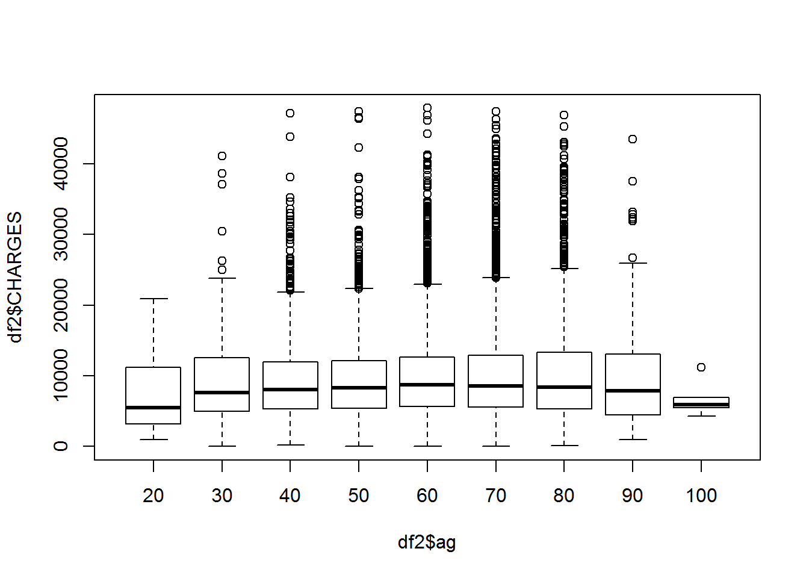

Chapter 4 Importing data and managing files
Learning objectives:
- Create projects in Rstudio
- Proper steps to import data
- Intro to data transformation using dplyr
4.1 Project-oriented workflow
It is best to create a separate folder that contains all related files. You can do the same for research projects. In Rstudio, this is called a Project. For example you can create a project for each of the chapters in this book. Projects are self-contained and can be moved to another computer or folder and the code will run.
If the first line of your R script is
setwd(“C:\Users\jenny\path\that\only\I\have”)
I will come into your office and SET YOUR COMPUTER ON FIRE
—@JennyBryan on Twitter

Animated GIF for creating project and import data.
4.1.1 Create a project in a new folder
Start by setting up a project in a new folder by going to File->New project->New Directory->Empty Project. Then choose where the directory will be created on your hard drive. I created a directory called “Chapter4” under “D:\RBook”. Rstudio creates a Project file named like “Chapter4.Rproj”, which contains information such as scripts files and working folders. Projects files can be saved and later opened from File->Open. In Windows you can also just double-click on the project file. You get everything ready to go on a particular assignment or research project.
This folder is your working folder, a default folder for reading files, writing outputs etc.
More advanced users should consider create a project using version control, so that all versions of your code is backup and easily shared by GitHub. See Happy Git and GitHub for the useR by Jenny Bryan.
4.1.2 Create a script file and comment (!)
Once you have a new project created, the first step is to start a new script file by clicking the File + button or go to File->New file and choose R script file. By default, the script file is called Untitled1.R. Rstudio will ask you to change it the first time you hit “Save” button.
Start your R script by adding comments on background information. Comments starting with “#” are ignored by R when running, but they are helpful for humans, including the future self, to understand the code. We re-cycle and re-use our codes over and over, so it is vital to add information about what a chunk of code does. Figure 4.1 shows a recommended workflow for beginning your script. Click “Save” button and name your file something like “Data Import.R”.
Write your scripts while saving your project files. If you click on the Run button, Rstudio runs the current line of code where your cursor is located. You can also select multiple lines and run them at once. You can jump back and forth but remember you are operating on the data objects sequentially. So sometimes you want to get a fresh start by running the reset line, namely:rm(list=ls()). This command lists and then deletes all data objects from R’s brain. As you develop your coding skills, following these guidelines can make you more efficient. Remember to save everything once a while by hitting the Save button on the main icon bar! Even though Rstudio saves your scripts every 5 seconds, it can crash.

Figure 4.1: Beginning a project in Rstudio, a recommended workflow: commenting, resetting, checking working folder.
4.1.3 Copy data files to the new directory
This is done outside of Rstudio on Windows or Mac interface. Download the heartatk4R.txt file from this page http://statland.org/R/RC/tables4R.htm. It is a tab-delimited text file, meaning the different columns are separated by tab. We also need to get some context about the data and how it is collected. At the minimum level, we need to know the meaning of each columns.
File unzipping, conversion, and context. If data is compressed, unzip using 7-zip, WinRAR, Winzip, gzip. Any of these will do. Is it a text file (CSV, txt, …) or Binary file (XLS, XLSX, …)? Convert binary to text file using corresponding application. Comma separated values (CSV) files, use comma to separate the columns. Another common type is tab-delimited text files, which uses the tab or \(\t\) as it is invisible character.
Checking the file with text editor and Excel. Before reading files into R, we often need to open the files to take a look. Notepad or WordPad that come with Windows is very limited (and so amateur)! Do not even think about using Microsoft Word! I strongly recommend that you install a powerful text editor such as NotePad++ (https://notepad-plus-plus.org/), or TextPad (https://www.textpad.com/). If you are a Mac user, try TextMate, TextWrangler etc. I use NotePad++ almost every day to look into data, and also write R programs, as it can highlight R commands based on R syntax. I even use a tool called NppToR (https://sourceforge.net/projects/npptor/) to send R commands from NotePad++ directly to R, and I love it!
Regardless of their extensions in file names, all plain text files can be opened by these text editors. Plain text files only contain text without any formatting, links and images. The file names can be “poems.txt”, “poems.tex”, “students.csv”, or just “data” without extension. I often save my R scripts as text file with names like “code_1-22-2017.R”. You can import text files, regardless of file names, to Microsoft Excel, which can properly parse your file into columns if the correct delimiter is specified.
Comma separated values (CSV) files, use comma to separate the columns. CSV files can also be conveniently opened by Excel. And Rstudio likes it too. So let’s try to use CSV files. Another common type is tab-delimited text files, which uses the tab or \(\t\) as it is invisible character. Other types of files such as Excel .xls or .xlsx files often needed to be saved as CSV files.
4.1.4 Import data files
In Rstudio, click File->Import Dataset->From text(readr)…, find the file on your hard drive. You should change the Delimiter to “tab”, and the preview shows that the data is correctly parsed into multiple columns. You can also change the name of your data object by changing the default “heartatk4R” to “df” on the lower left of the import interface.
We need to check each of the columns and see the data types are correctly read in. The first column is just patient id number runs from 1 to 12844. It will not be useful in our analysis. The numbers in DIAGNOSIS, DRG, and DIED are integers but they actually code for certain categories. They are not measurements. It does not make sense, for example, to add them or average them. Most of the times, there is no particular order. The same is true for SEX. So in this dialog interface, DIAGNOSIS, DRG, and DIED should be changed from “double” to “character”. As shown in Figure 4.2, you can click on the automatically guessed data type under each of the column names as shown in Figure 4.2. By selecting “character” from the drop down, you can successfully format this column as a character.
On the other hand, LOS (length of stay in days) and AGE should be numbers. But because 10 is presented as “0010”, these columns are automatically recognized as characters. We have to force R to read these columns as integers by clicking on the column title and select integer. We have to change LOS and AGE from “character” to “integer”.
The awesome nerds at Rstudio actually helped you generating these 3 lines of code:
library(readr)
df <- read_delim("heartatk4R.txt",
"\t", escape_double = FALSE, col_types = cols(AGE = col_integer(),
DIAGNOSIS = col_character(), DIED = col_character(),
DRG = col_character(), LOS = col_integer()),
trim_ws = TRUE)
View(df)Before you click on the Import button, I highly recommend that you select all the codes and copy it to the script file. After clicking Import, you can paste the code into a script window. If you do not have a script window open, you can create one by clicking the File + icon on the top left. Copy and paste these code to your script file. You will need it when you want to re-run the analysis without going through the above steps. You can see the data appears as a spreadsheet, which can be sorted by clicking on the column names. This spreadsheet can be closed. To reopen, click on x object, which is a data frame named after the input file. You data is now available as x.

Figure 4.2: Changing data types while importing data into Rstudio.
4.1.5 Check and convert data types
Most of the times, R can guess the type of data in each column. But we always need to double check using the str command. If not satisfied, we can enforce data type conversion in R using as.numeric, as.factor, or as.character functions.
str(df) # structure of data object, data types for each column## Classes 'spec_tbl_df', 'tbl_df', 'tbl' and 'data.frame': 12844 obs. of 8 variables:
## $ Patient : num 1 2 3 4 5 6 7 8 9 10 ...
## $ DIAGNOSIS: chr "41041" "41041" "41091" "41081" ...
## $ SEX : chr "F" "F" "F" "F" ...
## $ DRG : chr "122" "122" "122" "122" ...
## $ DIED : chr "0" "0" "0" "0" ...
## $ CHARGES : num 4752 3941 3657 1481 1681 ...
## $ LOS : int 10 6 5 2 1 9 15 15 2 1 ...
## $ AGE : int 79 34 76 80 55 84 84 70 76 65 ...
## - attr(*, "spec")=
## .. cols(
## .. Patient = col_double(),
## .. DIAGNOSIS = col_character(),
## .. SEX = col_character(),
## .. DRG = col_character(),
## .. DIED = col_character(),
## .. CHARGES = col_double(),
## .. LOS = col_integer(),
## .. AGE = col_integer()
## .. )We can reformat categorical values factors. We are going to use df$SEX to refer to the SEX column of the data frame df:
df$DIAGNOSIS <- as.factor(df$DIAGNOSIS) # convert this column to factor
df$SEX <- as.factor(df$SEX)
df$DRG <- as.factor(df$DRG)
df$DIED <- as.factor(df$DIED)Factors are very similar to character vectors. But factors have defined levels and their values are stored as integers.
nlevels(df$DIAGNOSIS)## [1] 9levels(df$DIAGNOSIS)## [1] "41001" "41011" "41021" "41031" "41041" "41051" "41071" "41081" "41091"Note “41001” is the reference level for this factor and it is coded as 1. The reference level for factors are important when we interpret results from regression, as effects are represented relative to the reference level. The reference level are defined based on the order they appear in the dataset. Sometimes we need to change the reference level.
df$DIAGNOSIS <- relevel( df$DIAGNOSIS, "41091")
levels(df$DIAGNOSIS)## [1] "41091" "41001" "41011" "41021" "41031" "41041" "41051" "41071" "41081"str(df) # double check structure of data## Classes 'spec_tbl_df', 'tbl_df', 'tbl' and 'data.frame': 12844 obs. of 8 variables:
## $ Patient : num 1 2 3 4 5 6 7 8 9 10 ...
## $ DIAGNOSIS: Factor w/ 9 levels "41091","41001",..: 6 6 1 9 1 1 1 1 6 6 ...
## $ SEX : Factor w/ 2 levels "F","M": 1 1 1 1 2 2 1 1 2 1 ...
## $ DRG : Factor w/ 3 levels "121","122","123": 2 2 2 2 2 1 1 1 1 3 ...
## $ DIED : Factor w/ 2 levels "0","1": 1 1 1 1 1 1 1 1 1 2 ...
## $ CHARGES : num 4752 3941 3657 1481 1681 ...
## $ LOS : int 10 6 5 2 1 9 15 15 2 1 ...
## $ AGE : int 79 34 76 80 55 84 84 70 76 65 ...
## - attr(*, "spec")=
## .. cols(
## .. Patient = col_double(),
## .. DIAGNOSIS = col_character(),
## .. SEX = col_character(),
## .. DRG = col_character(),
## .. DIED = col_character(),
## .. CHARGES = col_double(),
## .. LOS = col_integer(),
## .. AGE = col_integer()
## .. )summary(df) # a summary often gives us a lot of useful information ## Patient DIAGNOSIS SEX DRG DIED
## Min. : 1 41091 :5213 F:5065 121:5387 0:11434
## 1st Qu.: 3212 41041 :2665 M:7779 122:6047 1: 1410
## Median : 6422 41011 :1824 123:1410
## Mean : 6422 41071 :1703
## 3rd Qu.: 9633 41001 : 467
## Max. :12844 41081 : 287
## (Other): 685
## CHARGES LOS AGE
## Min. : 3 Min. : 0.000 Min. : 20.00
## 1st Qu.: 5422 1st Qu.: 4.000 1st Qu.: 57.00
## Median : 8445 Median : 7.000 Median : 67.00
## Mean : 9879 Mean : 7.569 Mean : 66.29
## 3rd Qu.:12569 3rd Qu.:10.000 3rd Qu.: 77.00
## Max. :47910 Max. :38.000 Max. :103.00
## NA's :699The summary( ) function is very useful to get basic information about data frames.
Note that for numeric columns we are shown mean, median, etc, while for factors the frequencies are shown. This reassured us that the data types are correctly recognized. It also shows missing values for CHARGES. Some people got free treatment for heart attack? Maybe not. Missing does not mean zero. Maybe the data was not entered for some patients.
Except enforcing data type conversion by as.factor, as.numeric and so on, We can also reformat the columns before clicking Import:
4.1.6 Close a project when you are done
Once you are done with a project, you can close it from File \(\rightarrow\)Close Project. If you do not close a project, Rstuio assumes that you will be continue working on the same project; even after your close Rstudio, the same project and files will be open next time when you start Rstudio. This is convenient, most of times. But I’ve seen some students’ Rstudio environment cluttered with all the things they have been doing for an entire semester. This is not only confusing, but could also lead to errors. For example in this class, you can start a new project for each chapter.
To open a project, use File \(\rightarrow\)Open Project and then navigate to the project. Alternatively you can double-click on the Chapter4.Rproj file from Windows or Mac. When a project file is loaded, the entire computing envirionment is set for you. The working directory is set properly. Some of the script files are open. If the script file is not open, you can open it by clicking on it from the Files tab in the lower right window.
4.2 Data manipulation in a data frame
We can sort the data by age. Again, type these commands in the script window, instead of directly into the Console window. And save the scripts once a while.
df2 <- df[order(df$AGE), ] # sort by ascending order by AGEGlobal Environment window contains the names and sizes of all the variables or objects in the computer memory. R programming is all about creating and modifying these objects in the memory with clear, step-by-step instructions. We also can sort the data by clicking on the column names in spreadsheet from Global Environment.
Just like in Excel, you can add a new column with computed results:
df2$pdc <- df2$CHARGES / df2$LOSHere we created a new column pdc to represent per day cost. We can also create a column to represent age groups using the floor function just returns the integer part.
df2$ag <- floor(df2$AGE/10) * 10You can now do things like this:
boxplot(df2$CHARGES ~ df2$ag)
Each box represents an age group. Older patients tends to stay longer in the hospital after being admitted for heart attack.
You can extract a subset of cases:
df3 <- subset(df2, SEX == "F") # Only females. “==” is for comparison and “=” is for assign value.
df4 <- subset(df3, AGE > 80) # only people older than 80
summary(df4) ## Patient DIAGNOSIS SEX DRG DIED CHARGES
## Min. : 7 41091 :564 F:1263 121:679 0:929 Min. : 92
## 1st Qu.: 3416 41071 :224 M: 0 122:250 1:334 1st Qu.: 5179
## Median : 6816 41041 :181 123:334 Median : 8580
## Mean : 6624 41011 :166 Mean :10143
## 3rd Qu.: 9814 41001 : 41 3rd Qu.:13347
## Max. :12841 41081 : 38 Max. :46915
## (Other): 49 NA's :74
## LOS AGE pdc ag
## Min. : 1.000 Min. : 81.00 Min. : 18.4 Min. : 80.00
## 1st Qu.: 5.000 1st Qu.: 83.00 1st Qu.: 796.7 1st Qu.: 80.00
## Median : 8.000 Median : 85.00 Median : 1113.7 Median : 80.00
## Mean : 9.457 Mean : 85.92 Mean : 1331.4 Mean : 81.96
## 3rd Qu.:13.000 3rd Qu.: 89.00 3rd Qu.: 1523.8 3rd Qu.: 80.00
## Max. :38.000 Max. :102.00 Max. :11246.1 Max. :100.00
## NA's :74Try not to attach the data when you are manipulation data like this.
Exercise 4.1 Answer the following questions. a). Get a subset which contains the middle-aged men whose ages are greater than 40 and less than or equal to 60.
b). Calculate cost per day for middle-aged men.
c). Generate a histogram of the cost per day.4.3 Data transformation using the dplyr
Following the same style of ggplot, the dplyr package, a part of the Tidyverse, makes data transformation more intuitive.
First we need to install the dplyr package.
install.packages("dplyr")With dplyr, data transformation becomes fun.
library(dplyr)
df2 <- df %>% # pipe operator; data is send to the next step
arrange(AGE) # sort in ascending order; desc(AGE) for descending order
head(df2)## # A tibble: 6 x 8
## Patient DIAGNOSIS SEX DRG DIED CHARGES LOS AGE
## <dbl> <fct> <fct> <fct> <fct> <dbl> <int> <int>
## 1 5411 41041 M 122 0 6214 4 20
## 2 10853 41091 F 122 0 6726. 4 21
## 3 4126 41041 M 122 0 10781 8 23
## 4 10738 41011 M 121 0 NA 8 23
## 5 4247 41091 F 122 0 10672 6 24
## 6 5199 41041 M 121 0 7596 8 24df2 <- df2 %>%
mutate( pdc = CHARGES / LOS) # new column by dividing two columns
head(df2)## # A tibble: 6 x 9
## Patient DIAGNOSIS SEX DRG DIED CHARGES LOS AGE pdc
## <dbl> <fct> <fct> <fct> <fct> <dbl> <int> <int> <dbl>
## 1 5411 41041 M 122 0 6214 4 20 1554.
## 2 10853 41091 F 122 0 6726. 4 21 1682.
## 3 4126 41041 M 122 0 10781 8 23 1348.
## 4 10738 41011 M 121 0 NA 8 23 NA
## 5 4247 41091 F 122 0 10672 6 24 1779.
## 6 5199 41041 M 121 0 7596 8 24 950.df2 <- df2 %>%
mutate( ag = floor(AGE/10) * 10) # new column, age group
head(df2)## # A tibble: 6 x 10
## Patient DIAGNOSIS SEX DRG DIED CHARGES LOS AGE pdc ag
## <dbl> <fct> <fct> <fct> <fct> <dbl> <int> <int> <dbl> <dbl>
## 1 5411 41041 M 122 0 6214 4 20 1554. 20
## 2 10853 41091 F 122 0 6726. 4 21 1682. 20
## 3 4126 41041 M 122 0 10781 8 23 1348. 20
## 4 10738 41011 M 121 0 NA 8 23 NA 20
## 5 4247 41091 F 122 0 10672 6 24 1779. 20
## 6 5199 41041 M 121 0 7596 8 24 950. 20df3 <- df %>%
filter(SEX == "F", AGE > 80) # filtering
head(df3)## # A tibble: 6 x 8
## Patient DIAGNOSIS SEX DRG DIED CHARGES LOS AGE
## <dbl> <fct> <fct> <fct> <fct> <dbl> <int> <int>
## 1 7 41091 F 121 0 10959. 15 84
## 2 13 41091 F 122 0 NA 9 83
## 3 27 41011 F 123 1 3215. 4 83
## 4 36 41041 F 121 0 2584. 9 81
## 5 51 41011 F 121 0 7589 11 81
## 6 67 41011 F 123 1 16429. 8 81The real power and efficiency of dplyr comes when you connect the pipes to do data transformation in multiple steps.
df2 <- df %>%
arrange(AGE) %>%
mutate( pdc = CHARGES / LOS) %>%
mutate( ag = floor(AGE/10) * 10) %>%
filter(SEX == "F", AGE > 80)
head(df2)## # A tibble: 6 x 10
## Patient DIAGNOSIS SEX DRG DIED CHARGES LOS AGE pdc ag
## <dbl> <fct> <fct> <fct> <fct> <dbl> <int> <int> <dbl> <dbl>
## 1 36 41041 F 121 0 2584. 9 81 287. 80
## 2 51 41011 F 121 0 7589 11 81 690. 80
## 3 67 41011 F 123 1 16429. 8 81 2054. 80
## 4 225 41041 F 123 1 4674. 7 81 668. 80
## 5 265 41091 F 122 0 9401. 9 81 1045. 80
## 6 284 41041 F 121 0 7240. 7 81 1034. 80arrange, mutate, filter are called action verbs. For more action verbs, see dplyr cheat sheet from the Rstudio main menu: Help \(\rightarrow\) Cheatsheets \(\rightarrow\) R Markdown Cheat Sheet. It is also available on line dplyr cheat Sheet.
4.4 Reading files directly using read.table
As you get more experience with R programming, there are many other options to import data.
In summary, we have the following code to read in the data. Reading the heart attack dataset. I am not using the Import Dataset in Rstudio. We have to make sure the file is in the current working directory. To set working directory from Rstudio main menu, go to Session -> Set Working Directory.
rm(list = ls()) # Erase all objects in memory
getwd() # show working directory
df <- read.table("datasets/heartatk4R.txt", sep="\t", header = TRUE)
head(df) # show the first few rows
# change several columns to factors
df$DRG <- as.factor(df$DRG)
df$DIED <- as.factor(df$DIED)
df$DIAGNOSIS <- as.factor(df$DIAGNOSIS)
df$SEX <- as.factor(df$SEX)
str(df) # show the data types of columns
summary(df) # show summary of datasetAlternatively, you can skip all of the above and do this.
df <- read.table("http://statland.org/R/RC/heartatk4R.txt",
header = TRUE,
sep = "\t",
colClasses = c("character", "factor", "factor", "factor",
"factor", "numeric", "numeric", "numeric"))We are reading data directly from the internet with the URL. And we are specifying the data type for each column.
4.5 General procedure to read data into R:
- If data is compressed, unzip using 7-zip, WinRAR, Winzip, gzip. Any of these will do.
- Is it a text file (CSV, txt, …) or Binary file (XLS, XLSX, …)? Convert binary to text file using corresponding application. Comma separated values (CSV) files, use comma to separate the columns. Another common type is tab-delimited text files, which uses the tab or \(\t\) as it is invisible character.
- Open with a text editor (TexPad, NotePad++) to have a look.
- Rows and columns? Row and column names? row.names = 1, header = T
- Delimiters between columns?(space, comma, tab…) sep = “\(\t\)”
- Missing values? NA, na, NULL, blank, NaN, 0 missingstring =
- Open as text file in Excel, choose appropriate delimiter while importing, or use the Text to Column under Data in Excel. Beware of the annoying automatic conversion in Excel “OCT4”->“4-OCT”. Edit column names by removing spaces, or shorten them for easy of reference in R. Save as CSV for reading in R.
- read.table ( ), or read.csv( ). For example,
x <- read.table(“somefile.txt”, sep = “$\t$”, header = TRUE, missingstring = “NA”) - Double check the data with str(df), make sure each column is recognized correctly as “character”, “factor” and “numeric”.
Pay attention to columns contain numbers but are actually IDs (i.e. student IDs), these should be treated as character. For example,
x$ids <- as.character(x$ids), here x is the data frame and ids is the column name. Also pay attention to columns contain numbers but actually codes for some discrete categories (1, 2, 3, representing treatment 1, treatment 2 and treatment 3). These need to be reformatted as factors. This could be done with something likex$treatment <- as.factor(x$treatment).
Refresher using cheat sheets that summarize many R functions is available here: https://www.rstudio.com/resources/cheatsheets/. It is important to know the different types of R objects: scalars, vectors, data frames, matrix, and lists.
4.6 Enter data manually
There are many different ways to get data into R. You can enter data manually (see below), or semi-manually (see below). You can read data into R from a local file or a file on the internet. You can also use R to retrieve data from databases, local or remote. The most import thing is to read data set into R correctly. A dataset not read in correctly will never be analyzed or visualized correctly.

x <- c(2.1, 3.1, 3.2, 5.4)
sum(x)## [1] 13.8A <- matrix(
c(2, 4, 3, 1, 5, 7), # the data elements
nrow = 2, # number of rows
ncol = 3) # number of columns
A # show the matrix## [,1] [,2] [,3]
## [1,] 2 3 5
## [2,] 4 1 7x <- scan() # Enter values from keyboard, separated by Return key. End by empty line.
2.1## [1] 2.13.1## [1] 3.14.1## [1] 4.1You can even use the scan() function to paste a column of numbers from Excel.
Exercise 4.2 Type in Table 4.1 in Excel and save as a CSV file and a tab-delimited tex file. Create a new Rstudio project as outlined above. Copy the files to the new folder. Import the CSV file to Rstudio. Create a script file which includes the rm(list = ls()) and getwd() command, the generated R code when importing the CSV file, (similar to those shown in Figure 4.2), and the code that convert data types (Age, BloodPressure and Weight should be numeric, LastName should be character and HeartAttack should be factor). Name the data set as patients. Submit the R script your created, data structure of the data set patient, and use head(patients) to show the data.
| LastName | Age | Sex | BloodPressure | Weight | HeartAttack |
|---|---|---|---|---|---|
| Smith | 19 | M | 100 | 130.2 | 1 |
| Bird | 55 | F | 86 | 300 | 0 |
| Wilson | 23 | M | 200 | 212.7 | 0 |